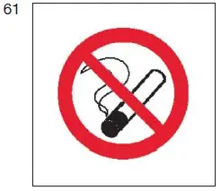
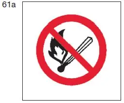

§ 3.32 Hinweis auf das Verbot zu rauchen, ungeschütztes Licht oder Feuer zu verwenden(Anlage 3: Bild 61)
Binnenschifffahrtsstraßen-Ordnung
1. Sofern es durch andere Vorschriften verboten ist, an Bord
a) zu rauchen,
b) ungeschütztes Licht oder Feuer zu verwenden,
muss dieses Verbot durch runde weiße Tafeln mit rotem Rand und rotem Schrägstrich, auf denen
a) eine brennende Zigarette in schwarzer Farbe oder |  |
b) ein entzündetes Streichholz in schwarzer Farbe |  |
abgebildet ist, angezeigt werden. Die Tafeln sind je nach Bedarf an Bord oder am Laufsteg aufzustellen. Abweichend von § 3.03 Nummer 3 muss ihr Durchmesser mindestens 0,60 m betragen.
2. Die Tafeln müssen erforderlichenfalls beleuchtet werden, damit sie bei Nacht deutlich sichtbar sind.